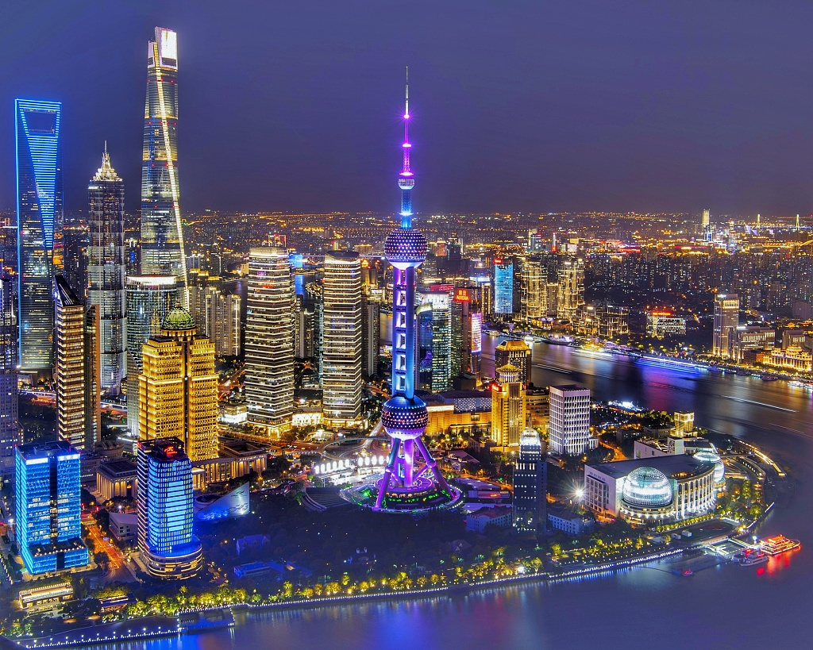
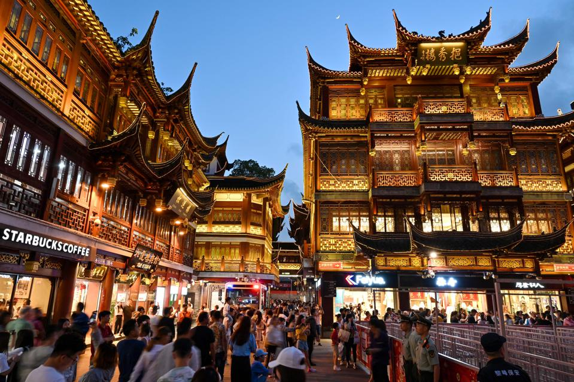
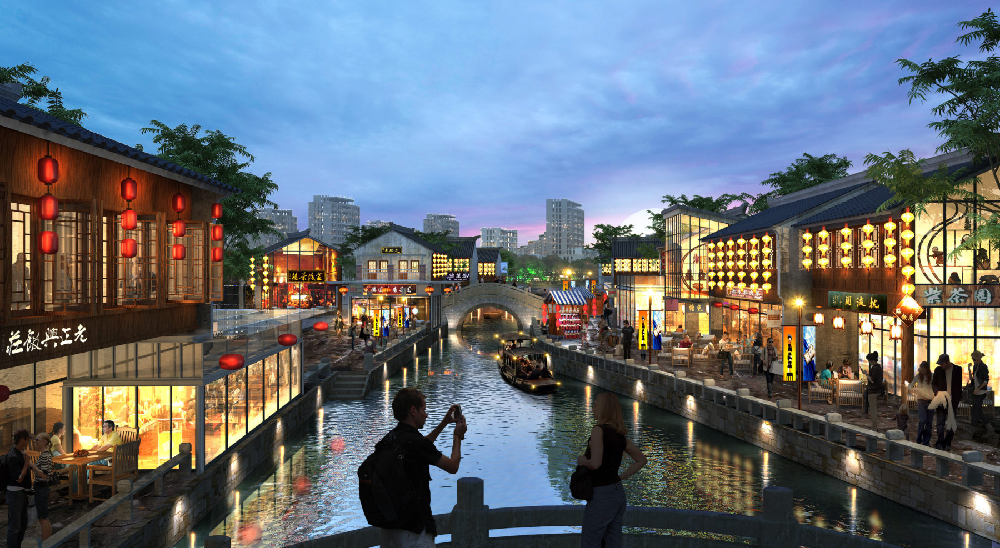
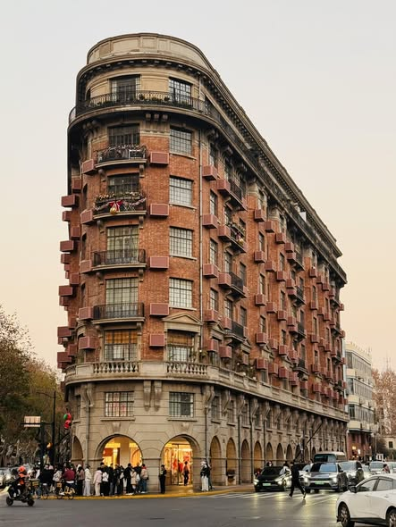
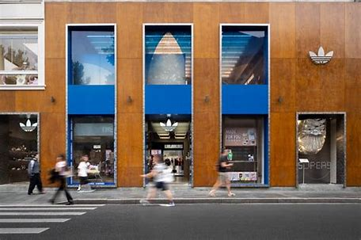

Discover Shanghai
Shanghai, China's largest city and financial hub, offers a fascinating mix of historical landmarks and modern skyscrapers. From the colonial architecture of The Bund to the futuristic skyline of Pudong, Shanghai is a city that seamlessly blends the old and new.
Suggested Visit Time
Recommended Duration: 5-8 days
Best Time to Visit: March to May (spring) or September to November (autumn) when the weather is mild and comfortable.

The Bund
The Bund is Shanghai's most famous waterfront area, lined with historic colonial buildings that once housed banks, trading houses, and consulates from the 19th and early 20th centuries. These impressive structures showcase a variety of architectural styles, including Gothic, Baroque, and Renaissance.
Strolling along The Bund, you'll enjoy breathtaking views of the Pudong skyline across the Huangpu River, especially at night when the buildings are beautifully lit up.

Yu Garden
Yu Garden, also known as the Garden of Happiness, is a classical Chinese garden located in the heart of Shanghai's Old Town. Built in the 16th century during the Ming Dynasty, this meticulously designed garden features pavilions, rockeries, ponds, and winding pathways.
The garden is surrounded by the bustling Yuyuan Bazaar, where you can find traditional Chinese handicrafts, souvenirs, and local snacks. It's a perfect place to experience traditional Chinese culture and architecture.
Lujiazui
Lujiazui is Shanghai's modern financial district located in Pudong, across the Huangpu River from The Bund. It's home to some of China's tallest and most iconic skyscrapers, including the Shanghai Tower (632 meters), the Oriental Pearl Tower, and the Shanghai World Financial Center.
This bustling business district is a symbol of Shanghai's rapid modernization and economic growth. Visitors can enjoy panoramic views of the city from the observation decks of these skyscrapers or relax in the nearby Century Park.
Zhujiajiao Watertown
Zhujiajiao is a well-preserved ancient water town located about 40 kilometers from central Shanghai. With a history dating back over 1,700 years, it's often referred to as the "Venice of Shanghai" due to its network of canals, stone bridges, and traditional architecture.
Visitors can explore the town's narrow alleyways, visit historic temples, and take boat rides along the canals. The town is also known for its local snacks and handicrafts, making it a popular day trip from Shanghai.
Tianzifang
Tianzifang is a trendy arts and crafts enclave located in the former French Concession area of Shanghai. It's a maze of narrow alleyways lined with boutique shops, art galleries, cafes, and restaurants, all housed in traditional shikumen (stone-gate) houses.
This bohemian neighborhood is popular with both locals and tourists for its unique atmosphere, where traditional Shanghai architecture meets contemporary art and design. It's a great place to shop for unique souvenirs, enjoy a coffee, or simply wander through the charming lanes.

Panlongtiandi Watertown
Panlongtiandi is a traditional water town located in the Qingpu District of Shanghai. It features classic江南 (Jiangnan) style architecture with canals, stone bridges, and well-preserved ancient buildings.
The town offers a peaceful escape from the bustling city, with opportunities to take boat rides, explore historic sites, and sample local cuisine. It's a great destination for those looking to experience traditional Chinese water town culture.

Wukang Building
Wukang Building (formerly Normandie Apartments) is an iconic Art Deco building located on Wukang Road in Shanghai's former French Concession. Designed by Hungarian architect Laszlo Hudec in 1924, this curved eight-story building is considered one of the most significant examples of Art Deco architecture in Shanghai.
The building's unique curved facade and elegant design have made it a beloved landmark and a popular spot for photography. It's often compared to similar buildings in Paris and is sometimes called the "Flatiron Building of Shanghai" due to its distinctive shape.

Anfu Road
Anfu Road is a trendy street in the former French Concession area of Shanghai, known for its boutique shops, stylish cafes, and art galleries. It's a popular spot for young locals and expats, offering a mix of designer stores, vintage shops, and cozy eateries.
The street has a relaxed, bohemian atmosphere, with tree-lined sidewalks and a variety of unique establishments. It's a great place to explore for shopping, dining, or simply enjoying the vibrant street scene of modern Shanghai.
Local Food
Shanghai cuisine, also known as Hu cuisine, is known for its sweet and savory flavors, with a focus on fresh ingredients and delicate preparation.
Xiaolongbao
These steamed dumplings are filled with juicy pork and broth. Be careful when biting into them, as the hot broth inside can burn your mouth!
Shengjianbao
Similar to xiaolongbao, but pan-fried instead of steamed, giving them a crispy bottom. They're typically filled with pork and soup.
Hairy Crab
A seasonal delicacy, especially popular in autumn. The crabs are known for their sweet meat and rich roe.
Zhajiangmian
Wheat noodles topped with a thick sauce made from fermented soybean paste, ground pork, and vegetables.